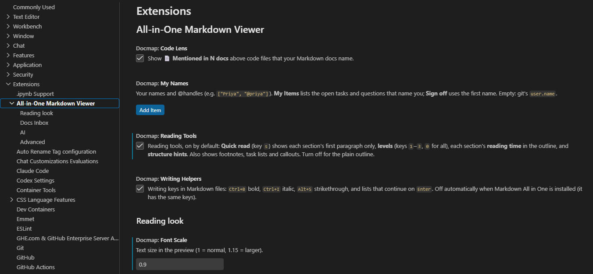
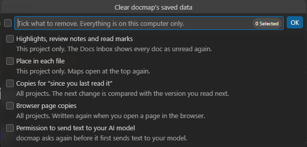
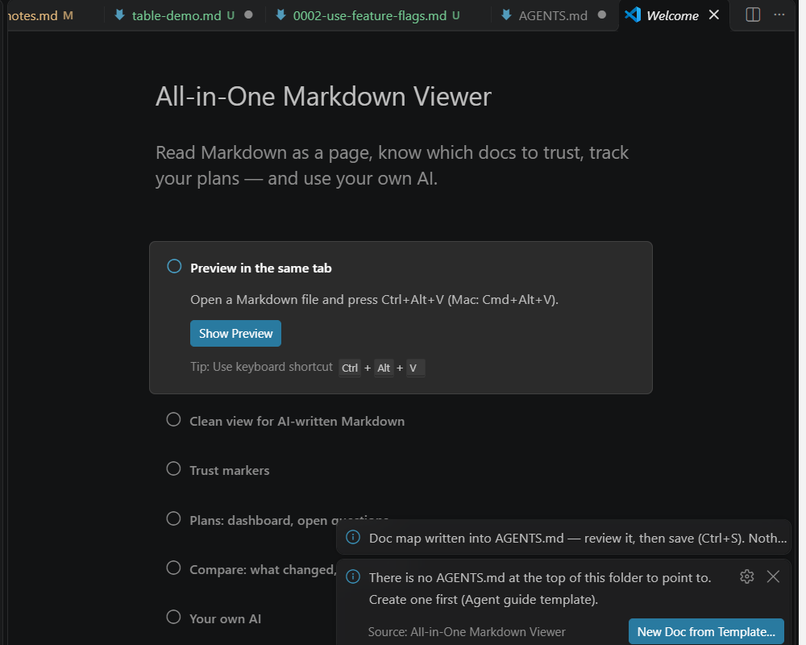
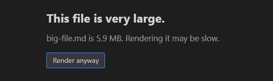
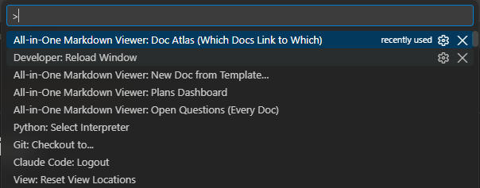

Settings, privacy and help
You rarely need to change anything. Here is what you can change, what docmap keeps, and what to do if something goes wrong.
-
All settings
“Can I make docmap behave differently?”
Yes. The settings come in five groups: the main ones, Reading look, Docs Inbox, AI and Advanced. Changes take effect at once.
Where: press Ctrl+, (Mac: Cmd+,) and type docmap.
See the full list
Setting What it does Default Main docmap.readingToolsQuick read, heading levels, reading times, structure hints in the outline on docmap.writingHelpersWriting keys and lists that continue on Enter on docmap.codeLens📄 Mentioned in N docs in code files on docmap.myNamesYour names and @handles for My Items and Sign off empty (your git user name) Reading look docmap.themeReading theme: vscode, paper, github, night, focus vscode docmap.fontScaleText size on the page (1 = normal, 1.15 = larger) 1 docmap.lineWidthLine width: narrow, normal, wide, full normal Docs Inbox next update docmap.skipFoldersExtra folders to leave out of the Docs Inbox, search, the Plans Dashboard and trust marks empty docmap.includeFoldersFolders starting with a dot to show after all .githubAI docmap.agentTargetWhere prompts go: clipboard or auto (Copilot Chat) clipboard docmap.ai.answerWithMyModelYour own model answers on a page off docmap.ai.toolsTools for your AI agents off Advanced (rarely needed) docmap.cleanViewClean view for AI-written Markdown on docmap.headingNumbersNumber the headings on the page off docmap.diagramsDraw mermaidblocks as diagramson docmap.inferHeadingsAdd bold-only lines and numbered lines like 2.1 Titleto the outline (auto / always / off)auto docmap.rememberPlaceReopen a page at the section you were reading on docmap.liveBrowserOpen Preview in Browser shows a live page (off: a saved copy) on docmap.largeFileBytesFiles bigger than this ask before they open (5242880 = 5 MB) 5 MB docmap.staleDaysDocs Inbox: unchanged this many days = “Probably out of date” (0 = never) 90 docmap.ai.modelWhich model family answers (empty: a Copilot model, else any) empty 
-
Privacy
“These are private company docs. Where does my text go?”
Nowhere. No accounts, no tracking, no servers. What docmap remembers stays on your computer, and prompts are only copied for you to paste.
The one exception: if you switch on Answer with my own model, your text goes to your own model, and only after you agree. Both AI settings are off until you turn them on.

-
Clear docmap's saved data next update
“I want docmap to forget what it remembered.”
Tick what to remove (highlights and notes, your place in each file, saved copies, permission to send text to your AI) and confirm. Your docs are never touched.
Where: Command Palette → Clear docmap's Saved Data…

-
Help inside VS Code
“I'd like someone to show me around.”
A six-step guided tour, each step with a button to try it, and a help page with every feature and an example to paste.
Where: Command Palette → Help: Get Started → All-in-One Markdown Viewer. Or the ? button on the Docs Inbox title.

-
Big files
“Will a huge file slow VS Code down?”
Files over 5 MB ask before they open as a page, so VS Code stays fast.
Where: automatic. The limit is the setting Large File Bytes.

-
Something not working?
“The Docs Inbox is gone,” or “the page doesn't draw.”
Most problems after an update go away when you reload the window. If Ctrl+Alt+V does nothing, another extension may use that key: click Show Preview instead.
Where: Command Palette → Developer: Reload Window. Still stuck? Report a problem on GitHub.
